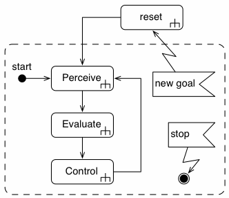
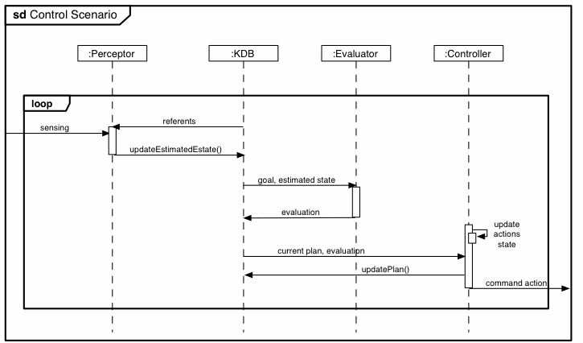

java.lang.Thread
org.aslab.om.ecl.ECL
java.lang.Thread
org.aslab.om.ecl.ECL
|
|||||||||||
| PREV CLASS NEXT CLASS | FRAMES NO FRAMES | ||||||||||
| SUMMARY: NESTED | FIELD | CONSTR | METHOD | DETAIL: FIELD | CONSTR | METHOD | ||||||||||
java.lang.Object
public abstract class ECL
change name: ECL0
@author chcorbato
this class defines the basics of an ECL unitThe operation of the ECL follows the following activity diagram, which is basically a periodic loop which can be reset by an incoming goal
The following sequence diagram shows the standard operation of the ECL as interactions between its conscituent objects

| Nested Class Summary |
|---|
| Nested classes/interfaces inherited from class java.lang.Thread |
|---|
java.lang.Thread.State, java.lang.Thread.UncaughtExceptionHandler |
| Field Summary |
|---|
| Fields inherited from class java.lang.Thread |
|---|
MAX_PRIORITY, MIN_PRIORITY, NORM_PRIORITY |
| Constructor Summary | |
|---|---|
ECL(java.lang.String eclName,
Sensor s,
Actuator a)
|
|
| Method Summary | |
|---|---|
double |
getTstep()
@return the loop period in millisecs |
void |
pauseECL()
method for "controllable" components to freeze their operation them |
void |
resumeECL()
method for "controllable" components to resume their operation |
void |
run()
|
void |
setActuator(Actuator a)
|
abstract void |
setGoal(Goal g)
|
void |
setSensors(Sensor s)
|
void |
setTstep(long tstep)
sets the ECL loop period @param tstep desired loop period in millisecs |
void |
startECL()
method for "controllable" components to start them |
void |
stopECL()
method for "controllable" components to stop them |
| Methods inherited from class java.lang.Thread |
|---|
activeCount, checkAccess, countStackFrames, currentThread, destroy, dumpStack, enumerate, getAllStackTraces, getContextClassLoader, getDefaultUncaughtExceptionHandler, getId, getName, getPriority, getStackTrace, getState, getThreadGroup, getUncaughtExceptionHandler, holdsLock, interrupt, interrupted, isAlive, isDaemon, isInterrupted, join, join, join, resume, setContextClassLoader, setDaemon, setDefaultUncaughtExceptionHandler, setName, setPriority, setUncaughtExceptionHandler, sleep, sleep, start, stop, stop, suspend, toString, yield |
| Methods inherited from class java.lang.Object |
|---|
equals, getClass, hashCode, notify, notifyAll, wait, wait, wait |
| Constructor Detail |
|---|
public ECL(java.lang.String eclName,
Sensor s,
Actuator a)
eclName - the name for the org.aslab.om.ecl to identify its - the sensor for the org.aslab.om.ecla - the actuator for the org.aslab.om.ecl| Method Detail |
|---|
public void run()
method for the manager of an ECL
run in interface java.lang.Runnablerun in class java.lang.Threadpublic void startECL()
public void stopECL()
public void pauseECL()
public void resumeECL()
public void setActuator(Actuator a)
method for the manager of the org.aslab.om.ecl, so as to provide it with a reference to its actuators so as to be able to send action_list to them
a - public abstract void setGoal(Goal g)
method for an application user of the ECL
g - public void setSensors(Sensor s)
method for the manager of the org.aslab.om.ecl
s - public void setTstep(long tstep)
tstep - public double getTstep()
|
|||||||||||
| PREV CLASS NEXT CLASS | FRAMES NO FRAMES | ||||||||||
| SUMMARY: NESTED | FIELD | CONSTR | METHOD | DETAIL: FIELD | CONSTR | METHOD | ||||||||||